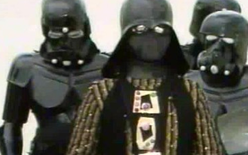

🗺️ POI2POL
Converte dados geoespaciais presentes nos relatórios avaliados no IPHAN. Roda direto no navegador, sem instalação.
Abrir aplicação →Só um cabra curioso

Sou Arqueólogo, atualmente no Instituto do Patrimônio Histórico e Artístico Nacional (IPHAN), na Superintendência do Maranhão. Mas nas horas vagas me pego fazendo e pesquisando sobre tecnologias — e foi assim que criei duas aplicações para ajudar a turma:
1 O POI2POL, para auxiliar a turma a converter dados geoespaciais que aparecem nos relatórios que precisamos avaliar no IPHAN.
2 O Petrolina Alternativo, um aplicativo para Android (a partir do 7.0) sobre os horários de ônibus dos projetos e outros alternativos de Petrolina — PE.
Se você estiver se perguntando o motivo desse último, bem: primeiro porque escolhi Android — porque quem tem iPhone não pega ônibus 😛. E segundo porque fui criado nas brenhas de Petrolina e, sempre que chego de viagem, às vezes pego ônibus e vivo perdido. Imagina quem mora lá, ou novos moradores…
Converte dados geoespaciais presentes nos relatórios avaliados no IPHAN. Roda direto no navegador, sem instalação.
Abrir aplicação →Horários de ônibus dos projetos e alternativos de Petrolina — PE. App para Android 7.0+.
⬇ Baixar APK